Section 1 — Visual Digest
ひと目でわかる おさらい
2進数の加算と減算、補数、浮動小数点数による実数の表現、演算誤差、そして論理回路と真理値表までを扱います。計算は 4 ビットの筆算から 16 ビットの浮動小数点数まで段階を追い、論理回路は図記号と真理値表を往復して確かめます。
はじめに 2 進数の加算と減算、そして補数を使った減算を確認します。次に小数を含む実数を浮動小数点数で表し、内部表現に収まらないときの誤差を分類します。最後に、演算や制御を行う論理回路を図記号と真理値表で読みます。
確認事項の一文はこれだけです。違いは、繰り上げが 1＋1 で起こること、繰り下げでは上の桁から借りた 1 が 2 になることです。
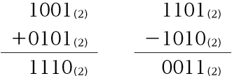
補数は、ある自然数に対し、加えると1桁増える最も小さな数です。2進数では各桁の0と1を反転し、1を加えて求められます。この補数を足すと、引き算が足し算で計算できます。
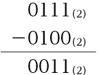
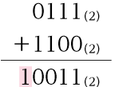
| 2進数 | 0000 | 0001 | 0010 | 0011 | 0100 | 0101 | 0110 | 0111 |
|---|---|---|---|---|---|---|---|---|
| 符号なし | 0 | 1 | 2 | 3 | 4 | 5 | 6 | 7 |
| 符号あり | 0 | 1 | 2 | 3 | 4 | 5 | 6 | 7 |
| 2進数 | 1000 | 1001 | 1010 | 1011 | 1100 | 1101 | 1110 | 1111 |
|---|---|---|---|---|---|---|---|---|
| 符号なし | 8 | 9 | 10 | 11 | 12 | 13 | 14 | 15 |
| 符号あり | －8 | －7 | －6 | －5 | －4 | －3 | －2 | －1 |
実数を表す場合には、浮動小数点数を使います。自然科学などの分野で、数値を指数表記で「4.235×108」と表すように、符号部、指数部、仮数部で表されます。
| 指数 | －7 | －6 | －5 | －4 | －3 | －2 | －1 | 0 |
|---|---|---|---|---|---|---|---|---|
| バイアス加算後 | 0 | 1 | 2 | 3 | 4 | 5 | 6 | 7 |
| 指数 | 1 | 2 | 3 | 4 | 5 | 6 | 7 | 8 |
|---|---|---|---|---|---|---|---|---|
| バイアス加算後 | 8 | 9 | 10 | 11 | 12 | 13 | 14 | 15 |
数値をコンピュータで扱う場合、コンピュータの内部表現(ビット列)に変換されて取り扱われるため、その表現に収まらない場合に、誤差が生じます。生じる場面で名前が決まります。
コンピュータで演算や制御を行う回路を論理回路といいます。基本は三つで、すべての入力の組合せと、対応する出力の関係を示す表が真理値表です。
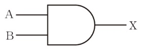
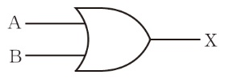
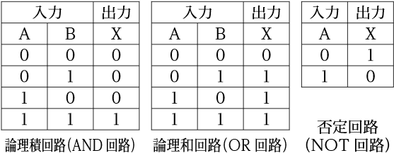
次の2進数の計算をせよ。
1100(2)
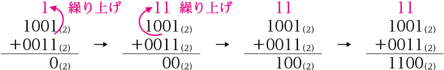
1011(2)
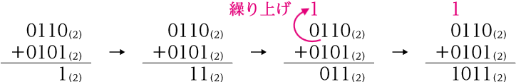
0101(2)
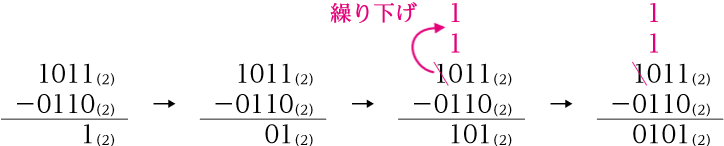
0101(2)
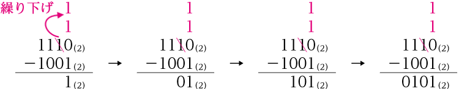
各小問の筆算は、模範解答の図のとおり。繰り上げと繰り下げの手順は次の二つ。
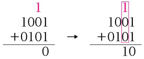
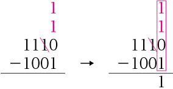
⑴ 9＋3＝12＝1100(2)、⑵ 6＋5＝11＝1011(2)、⑶ 11－6＝5＝0101(2)、⑷ 14－9＝5＝0101(2)。筆算の結果を 10 進数に直して確かめると、繰り上げ・繰り下げの書き忘れに気づけます。
次の2進数の補数を求めよ。
0111(2)
1001(2) 反転→ 0110(2) 1を加える→ 0111(2)
1001(2)
0111(2) 反転→ 1000(2) 1を加える→ 1001(2)
10010110(2)
01101010(2) 反転→ 10010101(2) 1を加える→ 10010110(2)
01100100(2)
10011100(2) 反転→ 01100011(2) 1を加える→ 01100100(2)
補数は「加えると1桁増える最も小さな数」です。⑴では 1001(2)＋0111(2)＝1 0000(2) と、4 ビットから 5 ビットへ桁が一つ増えます。⑶⑷の 8 ビットでも同じで、もとの数と補数を足すと 1 0000 0000(2) になります。反転と 1 を加える操作を別々に覚えるより、この足し算で確かめると間違えません。
次の10進数を、2進数の桁の重み(右の表)に分解し、2進数の小数に変換せよ。
| … | 整数部 | 小数点 | 小数部 | … | ||||||
|---|---|---|---|---|---|---|---|---|---|---|
| 8 | 4 | 2 | 1 | . | 0.5 | 0.25 | 0.125 | 0.0625 |
1.101(2)
1.625＝1＋0.5＋0.125 と分解されるので、1.101(2)と変換できる。
101.11(2)
5.75＝4＋1＋0.5＋0.25 と分解されるので、101.11(2)と変換できる。
110.011(2)
6.375＝4＋2＋0.25＋0.125 と分解されるので、110.011(2)と変換できる。
整数部と小数部を分けて考えます。整数部は 8・4・2・1 の重みで、小数部は 0.5・0.25・0.125・0.0625 の重みです。大きい重みから順に「引けるか」を見て、引けた重みの位に 1 を書きます。⑶なら 6.375 から 4 を引いて 2.375、2 を引いて 0.375、0.5 は引けず、0.25 を引いて 0.125、0.125 を引いて 0 になります。
10進数の6.75を、16ビットの2進数の浮動小数点数(符号部1ビット、指数部5ビット、仮数部10ビット)で表すことを考える。次の文章の空欄に適当な数字を入れよ。
| … | 整数部 | 小数点 | 小数部 | … | ||||||
|---|---|---|---|---|---|---|---|---|---|---|
| 8 | 4 | 2 | 1 | . | 0.5 | 0.25 | 0.125 | 0.0625 |
0.25
4＋2＋0.5＋0.25＝6.75。よって 6.75(10)＝110.11(2)。
0
正の数なので、符号部は0となる。
1011000000
常に1となる最上位は省略し、2番目の桁から仮数部となり、残った桁は0で満たす。よって、1011000000となる。
10001
この例題の場合、指数部5ビットなので、バイアスは15(01111(2))である。17 を 5 ビットの 2 進数で表して 10001。
0 10001 1011000000(2)
符号部 0、指数部 10001、仮数部 1011000000 の順に並べる。
| … | 整数部 | 小数点 | 小数部 | … | ||||||
|---|---|---|---|---|---|---|---|---|---|---|
| n3 | n2 | n1 | n0 | . | n－1 | n－2 | n－3 | n－4 |
① 10進数を2進数の小数にする(110.11)。② 先頭が 1 になるよう小数点を動かし、1.1011×22 の形にする。③ 符号部・指数部(指数 2 にバイアス 15 を加えて 17)・仮数部(先頭の 1 を省いた 1011 に 0 を足して 10 ビット)を作る。④ 三つを並べる。類題79・練習84 も同じ四段です。
次の⑴～⑸の記述は、コンピュータによる演算誤差についての説明である。それぞれの誤差の名称を答えよ。
桁落ち
例えば、0.1111(2)と0.1110(2)の引き算を行うと、0.0001(2)となる。引き算の前では、有効数字は4桁であるが、引き算の後では1桁となってしまい、有効桁数が減ってしまう。
丸め誤差
例えば、円周率や循環小数などを限られた桁数の範囲で表現すると、差が生じることで理解できる。
打ち切り誤差
無限に続く計算を有限回で止めたときに生じます(補足)。
桁あふれ誤差
例えば、「1.01(2)×210000」という極めて大きな数を扱おうとした場合、指数部の値「10000」は、浮動小数点数の指数部が取り得る最大値を超えるため扱えない。
情報落ち
例えば、絶対値の大きな数 1101(2) と小さな数 0.00001101(2) を用意すると、二数の足し算の結果は、1101.00001101(2) になる。仮数部のビットに収まりきらない小数の下位部分は削除されてしまう。
⑶の打ち切り誤差は、原本に例がありません。無限に続く計算(級数や繰り返し)を有限回で止めたときの、止めた先の分のずれです。五つの名前は「いつ生じるか」で決まります。桁を削れば丸め、ビット数を超えれば桁あふれ、途中でやめれば打ち切り、近い数を引けば桁落ち、大きさの違う数を足し引きすれば情報落ちです。
次の⑴～⑶の論理回路にあたる図記号を、下の(ア)～(カ)から一つずつ選べ。
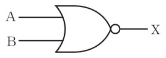
(ウ)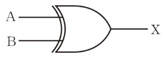
(エ)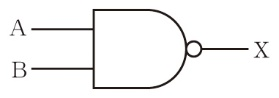
(オ)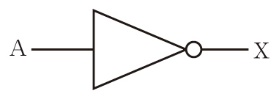
(カ)(イ)は論理和回路(OR回路)の図記号に「○」(否定)が付いているので否定論理和回路(NOR回路)、(エ)は論理積回路(AND回路)の図記号に「○」(否定)が付いているので否定論理積回路(NAND回路)と呼ばれる。また、(ウ)は排他的論理和回路(XOR回路)と呼ばれ、二つの入力のうち、一方のみ「1」のときだけ出力が「1」となる。
出力側の小さな「○」は否定を表します。(オ)の三角形に○が付いたものが否定回路で、(イ)(エ)は OR・AND の出力を否定したものです。○のない(ア)(カ)が、そのまま OR と AND です。
次に示した⑴～⑶の論理回路の図記号について、それぞれ真理値表を作成せよ。
論理和回路(OR回路)の真理値表
| 入力 | 出力 | |
|---|---|---|
| A | B | X |
| 0 | 0 | 0 |
| 0 | 1 | 1 |
| 1 | 0 | 1 |
| 1 | 1 | 1 |
入力のいずれか一方が1であれば、出力が1になる。
論理積回路(AND回路)の真理値表
| 入力 | 出力 | |
|---|---|---|
| A | B | X |
| 0 | 0 | 0 |
| 0 | 1 | 0 |
| 1 | 0 | 0 |
| 1 | 1 | 1 |
二つの入力がともに1のときだけ、出力が1になる。
否定回路(NOT回路)の真理値表
| 入力 | 出力 |
|---|---|
| A | X |
| 0 | 1 |
| 1 | 0 |
入力した信号を反転した値を出力信号とする。
⑴は論理和回路(OR回路)、⑵は論理積回路(AND回路)、⑶は否定回路(NOT回路)の図記号である。
入力が二つなら、組合せは 22＝4 通りで、上から 00・01・10・11 の順に並べます。入力が一つなら 0・1 の 2 通りです。出力の列は、その回路の働き(ともに1 / いずれか1 / 反転)を一行ずつ当てはめて埋めます。
次の2進数の計算をせよ。
1111(2)
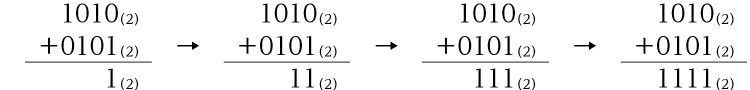
1011(2)
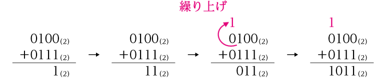
1110(2)
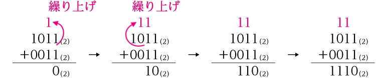
0011(2)
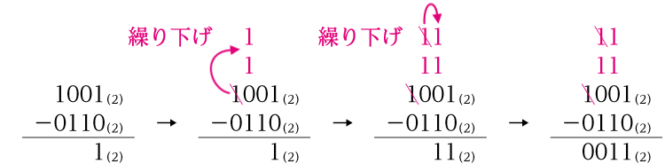
0101(2)
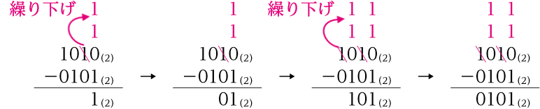
0011(2)
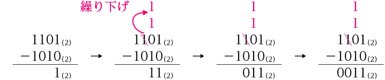
各小問の筆算の図は、模範解答に載せてある。繰り上げは一つ上の桁に1を書き、繰り下げは一つ下の桁に1を二つ書いて計算する(例題43 解説)。
⑴ 10＋5＝15、⑵ 4＋7＝11、⑶ 11＋3＝14、⑷ 9－6＝3、⑸ 10－5＝5、⑹ 13－10＝3。結果を 10 進数に直すと、それぞれ 1111・1011・1110・0011・0101・0011 と一致します。
次の2進数の補数を求めよ。
0100(2)
1100(2)
↓ 各桁の0と1を反転
0011(2)
↓ 1を加算
0100(2)
0110(2)
1010(2)
↓ 各桁の0と1を反転
0101(2)
↓ 1を加算
0110(2)
10111000(2)
01001000(2)
↓ 各桁の0と1を反転
10110111(2)
↓ 1を加算
10111000(2)
01001000(2)
10111000(2)
↓ 各桁の0と1を反転
01000111(2)
↓ 1を加算
01001000(2)
⑴ 1100(2)＋0100(2)＝1 0000(2)、⑶ 01001000(2)＋10111000(2)＝1 0000 0000(2)。もとの数と補数を足すと、ちょうど桁が一つ増えて残りが 0 になります。⑶と⑷は互いに補数なので、片方の答えがもう片方の問題になっています。
次の10進数を、2進数の小数に変換せよ。
11.01(2)
3.25＝2＋1＋0.25と表すことができる。よって、2と1と0.25の桁はあり、0.5の桁はないので、11.01(2)となる。
101.1001(2)
5.5625＝4＋1＋0.5＋0.0625と表すことができる。よって、4と1と0.5と0.0625の桁はあり、2と0.25と0.125の桁はないので、101.1001(2)となる。
111.111(2)
7.875＝4＋2＋1＋0.5＋0.25＋0.125と表すことができる。よって、4と2と1と0.5と0.25と0.125の桁があるので、111.111(2)となる。
111.101(2)
7.625＝4＋2＋1＋0.5＋0.125と表すことができる。よって、4と2と1と0.5と0.125の桁があり、0.25の桁はないので、111.101(2)となる。
2進数の桁の重みは、以下のように表される。
| … | 整数部 | 小数点 | 小数部 | … | ||||||
|---|---|---|---|---|---|---|---|---|---|---|
| 8 | 4 | 2 | 1 | . | 0.5 | 0.25 | 0.125 | 0.0625 |
小数部の桁数は、使った重みのうち最も小さいものまでです。⑵は 0.0625 を使うので小数部は 4 桁、⑴は 0.25 までなので 2 桁になります。使わなかった位に 0 を書き忘れると、桁がずれます。
次の2進数を、10進数の小数に変換せよ。
3.375
2と1と0.25と0.125の桁に1があるので、2＋1＋0.25＋0.125＝3.375と表すことができる。
9.75
8と1と0.5と0.25の桁に1があるので、8＋1＋0.5＋0.25＝9.75と表すことができる。
5.3125
4と1と0.25と0.0625の桁に1があるので、4＋1＋0.25＋0.0625＝5.3125と表すことができる。
4.125
4と0.125の桁に1があるので、4＋0.125＝4.125と表すことができる。
2進数の桁の重みは、以下のように表される。
| … | 整数部 | 小数点 | 小数部 | … | ||||||
|---|---|---|---|---|---|---|---|---|---|---|
| 8 | 4 | 2 | 1 | . | 0.5 | 0.25 | 0.125 | 0.0625 |
小数点のすぐ右が 0.5、その右が 0.25、0.125、0.0625 です。⑶の 0101 なら、2 桁目の 0.25 と 4 桁目の 0.0625 を足します。整数部は右端から 1・2・4・8 と読みます。
次の①～④の手順に従って各問いに答え、10進数の3.125を16ビットの2進数の浮動小数点数で表せ。ただし、浮動小数点数は、符号部1ビット、指数部5ビット、仮数部10ビットとする。
11.001(2)
3.125＝2＋1＋0.125と表すことができるので、2と1と0.125の桁はあり、0.5と0.25の桁はないので、11.001(2) となる。
1.1001(2)×21
11.001(2)＝1.1001(2)×21 となる。
15
指数部5ビットなので、バイアスは 01111(2) である。よって、10進法では15となる。
0 10000 1001000000(2)
正の数なので符号部は0である。また、指数部は、②で求めた1にバイアスの15を加算した16なので、10000(2) となる。仮数部は、②で求めた小数の最上位の1を省略した1001に、残りの桁を0で埋めて、1001000000(2) である。
手順は例題46 と同じ四段ですが、②で小数点を動かす桁数が違います。11.001 は小数点を左に 1 つ動かすので指数は 1、例題46 の 110.11 は 2 つ動かすので指数は 2 でした。動かした桁数がそのまま指数になり、バイアス 15 を足したものが指数部です。
次の(ア)～(エ)の記述のうち、桁落ちの説明として最も適当なものを一つ選べ。
桁落ちは、絶対値のほぼ等しい二つの数の引き算を行ったとき、有効桁数が減少するために発生する。
五つの誤差のうち、この問題には打ち切り誤差だけが出てきません。残る四つの説明が一つずつ並んでいるので、名前と場面を対にして読めば、桁落ちの(ア)だけでなく、ほかの三つも同時に確かめられます。
集合について成り立つ「ド・モルガンの法則」がある。それを以下に示す(①、②)。なお、集合をAとB、記号を和集合∪、共通部分(積集合)∩、補集合 A とする。
この関係は、集合A、Bを「入力」、共通部分(積集合)を「論理積」、和集合を「論理和」、補集合を「否定」とすると、論理回路にもなり立つ法則である。そこで、次の問いに答えよ。ただし、解答には次の論理回路を用いること。
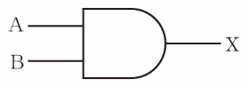
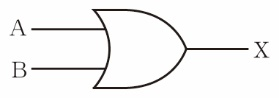
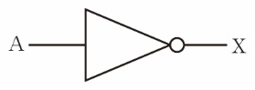
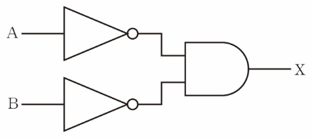
論理和回路に否定回路を接続する
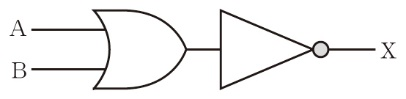
求める①の左辺「A∪B」は、入力A、Bの論理和「A∪B」の否定である。よって、論理回路＜論理和＞に論理回路＜否定＞を接続する。
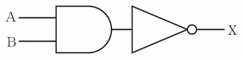
否定回路に論理和回路を接続する
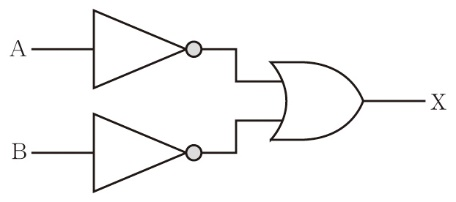
求める②の右辺「A∪B」は、各入力A、Bの否定「A」、「B」の論理和である。よって、論理回路＜否定＞に論理回路＜論理和＞を接続する。
上線が式全体にかかっていれば、回路の最後に否定を置きます。上線が A と B に別々にかかっていれば、入力のすぐあとにそれぞれ否定を置きます。∪は論理和、∩は論理積です。⑴は「和のあとに否定」、⑵は「否定のあとに和」で、否定の位置が入れ替わります。
次の図のように、論理回路を組み合わせた回路を作った。このとき、入力A、Bと出力Xの真理値表を作成せよ。
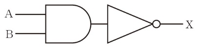
| 入力 | 出力 | |
|---|---|---|
| A | B | X |
| 0 | 0 | 1 |
| 0 | 1 | 1 |
| 1 | 0 | 1 |
| 1 | 1 | 0 |
入力A、Bは論理積(AND)回路につながっており、その出力が否定(NOT)回路につながっている。よって、A、Bの論理積を反転した結果が出力Xとなる。
入力の数がAとBの二つなので、入力の枠の行数は、22＝4 である。0と1のすべての組合せを記入後、それぞれの出力を記入する。
入力A、Bは論理積(AND)回路につながっており、その出力が否定(NOT)回路につながっている。よって、A、Bの論理積を反転した結果が出力Xとなる。
途中の値(論理積の出力)を一列足して書くと、反転の対象がはっきりします。論理積は 11 のときだけ 1 なので、その列は 0・0・0・1。これを反転した 1・1・1・0 が X です。例題48 の(エ)否定論理積回路(NAND回路)と同じ働きです。
| A | B | A AND B | X ＝ NOT(A AND B) |
|---|---|---|---|
| 0 | 0 | 0 | 1 |
| 0 | 1 | 0 | 1 |
| 1 | 0 | 0 | 1 |
| 1 | 1 | 1 | 0 |
次の図のように、論理回路を組み合わせた回路を作った。このとき、入力A、B、Cと出力Xの真理値表を作成せよ。
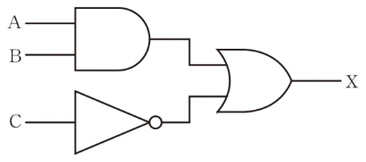
| 入力 | 出力 | ||
|---|---|---|---|
| A | B | C | X |
| 0 | 0 | 0 | 1 |
| 0 | 0 | 1 | 0 |
| 0 | 1 | 0 | 1 |
| 0 | 1 | 1 | 0 |
| 1 | 0 | 0 | 1 |
| 1 | 0 | 1 | 0 |
| 1 | 1 | 0 | 1 |
| 1 | 1 | 1 | 1 |
入力Cは否定(NOT)回路につながっており、さらにその出力は論理和(OR)回路につながっている。よって、入力Cが0のときはすべて、出力Xが1になる。
入力の数がA、B、Cの三つなので、入力の枠の行数は、23＝8である。0と1のすべての組合せを記入するには、次の手順で進める。
入力Cは否定(NOT)回路につながっており、さらにその出力は論理和(OR)回路につながっている。よって、入力Cが0のときはすべて、出力Xが1になる。
C が 0 の行は、否定の出力が 1 なので論理和も 1 になり、A・B を見なくても X＝1 です。C が 1 の行は否定の出力が 0 なので、X は A と B の論理積で決まります。A＝B＝1 の最後の行だけが 1、残りの 3 行は 0 です。
| A | B | C | A AND B | NOT C | X |
|---|---|---|---|---|---|
| 0 | 0 | 0 | 0 | 1 | 1 |
| 0 | 0 | 1 | 0 | 0 | 0 |
| 0 | 1 | 0 | 0 | 1 | 1 |
| 0 | 1 | 1 | 0 | 0 | 0 |
| 1 | 0 | 0 | 0 | 1 | 1 |
| 1 | 0 | 1 | 0 | 0 | 0 |
| 1 | 1 | 0 | 1 | 1 | 1 |
| 1 | 1 | 1 | 1 | 0 | 1 |
次の問いに答えよ。
1 10001 0111000000(2)
① －5.75＝－(4＋1＋0.5＋0.25) と表すことができるので、4と1と0.5と0.25の桁はあり、2の桁はないので、－101.11(2) となる。
② －101.11(2)＝－1.0111(2)×22 となる。
③ 指数部5ビットなので、バイアスは 01111(2) である。
④ 負の数なので符号部は1である。また、指数部は、②で求めた2にバイアスの15を加算した17なので、10001(2) となる。仮数部は、②で求めた小数の最上位の1を省略した0111に、残りの桁を0で埋めて、0111000000(2) である。
13.25
・符号部が0なので、正の数である。
・バイアスは 01111(2) であり、指数部からバイアスを引いて、10010(2)－01111(2)＝00011(2) よって、23 となる。仮数部は、1010100000(2) なので、省略した最上位の1を追加し、求めた指数と合わせて 1.1010100000(2)×23 と表される。
・1.1010100000(2)×23＝1101.0100000
・8と4と1と0.25の桁に1があるので、8＋4＋1＋0.25＝13.25と求められる。
⑴
⑵
⑴は 10進数 → 浮動小数点数、⑵は浮動小数点数 → 10進数で、手順を逆にたどります。どちらも真ん中に「1.～×2n」の形を置くと迷いません。⑴の符号は最後に符号部へ、⑵の指数は「指数部からバイアス 15 を引く」で戻します。
16ビットの2進数の浮動小数点数(符号部1ビット、指数部5ビット、仮数部10ビット)どうしの加算について述べた、次の文章の空欄に入る最も適当な2進数を答えよ。
01111
バイアスは、5ビットの指数部の場合、最上位を0とし、残りの4ビットを1とした 01111(2)である。
1.0101110000
省略している1を付け加えて、「1.～」の形にする。よって、1.0101110000(2)である。
10.010110000
指数部が 10000(2) なので、バイアスの 01111(2) を引くと、00001(2) つまり1である。仮数部は、省略している1を付け加えて、「1.～」の形にすると、1.0010110000(2) である。よって、Bは、1.0010110000(2)×21 つまり 10.010110000(2) と表すことができる。
10001
1.1111001000(2)×22 であることから、指数部は、00010(2) にバイアスの 01111(2) を加えた 10001(2) となる。
0 10001 1111001000
符号部は0、指数部は 10001(2)、仮数部は 1111001000(2) なので、0 10001 1111001000(2) である。
0 10010 0000111000
0 10010 1101100000(2) は 1.1101100000(2)×23 つまり 1110.1100000(2)、1 10001 1001010000(2) は負の数で －1.1001010000(2)×22 つまり －110.01010000(2)。加算結果は 1110.1100000(2)＋(－110.01010000(2))＝1000.0111000(2)。これを 1.0000111000(2)×23 とし、符号部 0、指数部 00011(2)＋01111(2)＝10010(2)、仮数部 0000111000(2)。
A＝101.0111(2)＝5.4375、B＝10.01011(2)＝2.34375 で、A＋B＝7.78125＝111.11001(2) です。カは 1110.11(2)＝14.75 と －110.0101(2)＝－6.3125 の和で 8.4375＝1000.0111(2) です。10進数で足しても同じ値になれば、2進数の筆算が合っています。
次に示す論理回路の真理値表として最も適当なものを、下の(ア)～(エ)から一つ選べ。
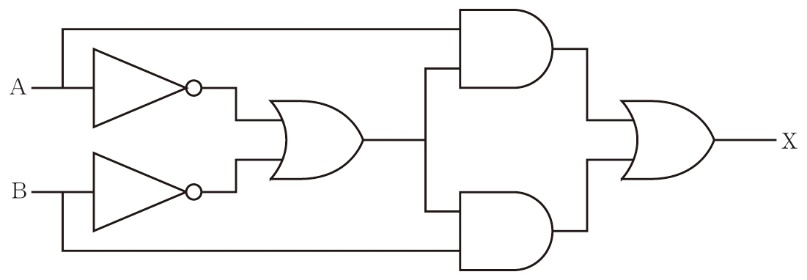
入力A、Bのすべての組合せを順番に確かめ、出力Xの違うものを除いていけばよい。
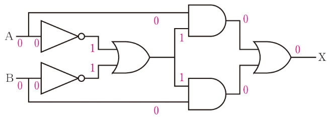
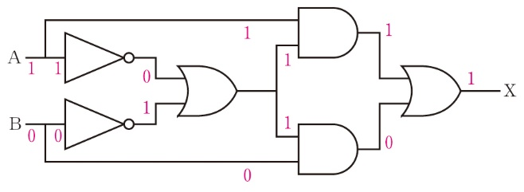
残る A＝1、B＝1 のときは、否定の出力がともに 0 なので論理和は 0、二つの論理積も 0 で X＝0 です。四行そろえると X は 0・1・1・0 で、例題48 の(ウ)排他的論理和回路(XOR回路)と同じ出力になります。選択問題では原本のように、違いが出る行だけ確かめて候補を減らすのが速い方法です。
次に示す論理回路と同じ出力が得られる論理回路を、下の(ア)～(オ)から一つ選べ。
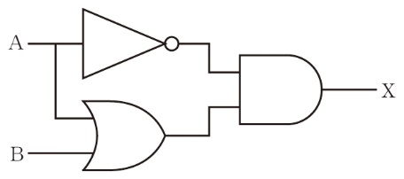
はじめに、問題に示された論理回路の真理値表を作成する。
| 入力 | 出力 | |
|---|---|---|
| A | B | X |
| 0 | 0 | 0 |
| 0 | 1 | 1 |
| 1 | 0 | 0 |
| 1 | 1 | 0 |
次に、(ア)～(オ)の論理回路の真理値表を作成して比較してもよいが、効率的に入力A、Bのすべての組合せを順番に確かめ、出力Xの違うものを除いていく。
問題の回路は、A の否定と「A または B」の論理積です。A＝1 なら否定が 0 なので X＝0、A＝0 なら「A または B」は B そのものなので X＝B。つまり A＝0 かつ B＝1 のときだけ 1 になります。(エ)は「A または（B の否定）」の全体を否定した回路です。類題81 のド・モルガンの法則で書き換えると「A の否定 かつ B」になり、問題の回路と同じ働きです。